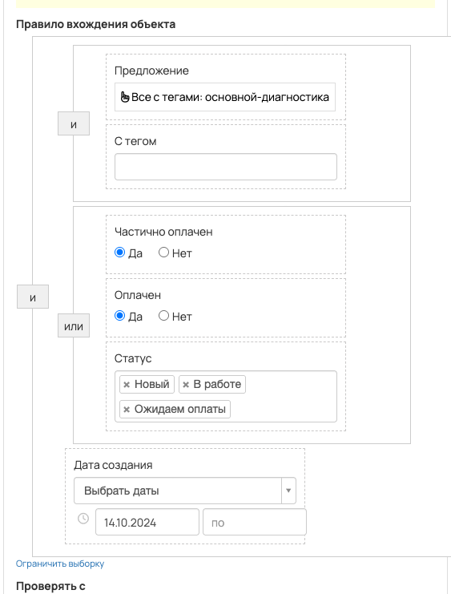
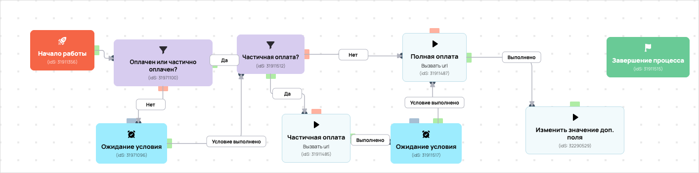

[AMO] Оплатил диагностику(не беспл), передача в амо
- ID процесса:
1832023 - Объект: Заказы
- Статус: Не запущен
Описание из GetCourse
30.06.2026. Подробный ход процесса GetCourse:
Главное: В процесс попадают заказы по всем предложениям с тегом «основной-диагностика».
Процесс работает с объектом GetCourse: Заказы. Текущий статус процесса: Не запущен.
Как идет процесс внутри GetCourse:
- Схема состоит из 13 блоков и 20 переходов.
Конец подробного хода процесса GetCourse.
Оплатил диагностику без бесплатного заказа "Диагностика"
под удаление
Понятное описание процесса
- Процесс работает с объектом GetCourse: Заказы. Текущий статус процесса: Не запущен.
- На вход попадают данные так: В процесс попадают заказы по всем предложениям с тегом «основной-диагностика».
- Техническое правило входа в GetCourse: Предложение (все с тегами: основной-диагностика) и С тегом (ID: 1640675) и Частично оплачен (да) или Оплачен (да) или Статус (ID: new, in_work, payment_waiting) и Дата создания (дата: 14.10.2024 - ...).
- Внутри схемы есть дополнительные проверки/ожидания: 4. Основные блоки: «Частичная оплата?»; «Ожидание условия»; «Оплачен или частично оплачен?».
- Дальше процесс делает прямые вызовы Vakas: 2. Напрямую задействованы базы: 60354.
- Передача: 60354. База 60354: Оплаты и заказы. Передаются параметры:
number,id,order_id,positions,costMoney,leftCostMoney,payedMoney,status,paymentLink,firstNameи другие. - Передача: 60354. База 60354: Оплаты и заказы. Передаются параметры:
number,id,order_id,positions,costMoney,leftCostMoney,payedMoney,status,paymentLink,firstNameи другие. - Что происходит в amoCRM: Маршрут в amoCRM нужно проверить вручную.
Ход процесса в GetCourse
- Схема состоит из 13 блоков и 20 переходов.
- По типам: стартов 1, условий/ожиданий 4, вызовов URL 6, изменений полей 1, финалов 1.
Блоки процесса: что делают и зачем нужны:
- Блок
31911356«Начало работы» (старт). Что делает: Запускает выполнение схемы для объекта, который попал под правило входа процесса. Зачем нужен: Нужен как точка входа: от него GetCourse начинает движение объекта по схеме. Дальше: если результат «Выполнено», идет в «Оплачен или частично оплачен?». - Блок
31971100«Оплачен или частично оплачен?» (условие). Что делает: Проверяет условие: Частично оплачен (да) или Оплачен (да) и Предложение (все с тегами: основной-диагностика). Зачем нужен: Нужен, чтобы разделить поток: подходящих пользователей/заказы отправить дальше, неподходящих перевести на другую ветку или завершить. Дальше: если результат «Нет», идет в «Ожидание условия»; если результат «Да», идет в «Частичная оплата?». - Блок
31911512«Частичная оплата?» (условие). Что делает: Проверяет условие: Частично оплачен (да) и Предложение (все с тегами: основной-диагностика). Зачем нужен: Нужен, чтобы разделить поток: подходящих пользователей/заказы отправить дальше, неподходящих перевести на другую ветку или завершить. Дальше: если результат «Нет», идет в «Полная оплата»; если результат «Да», идет в «Частичная оплата». - Блок
31911485«Частичная оплата» (вызов URL). Что делает: Передает в Vakas: 60354. База 60354, канал «Оплаты и заказы» (GET); параметры:number,id,order_id,positions,costMoney,leftCostMoney,payedMoney,status,paymentLink,firstName,lastName,name,email,phoneи другие; timeout 300 сек. Зачем нужен: Нужен, чтобы передать подходящий объект в 60354. База 60354; дальше Маршрут в amoCRM нужно проверить вручную. Дальше: если результат «Ошибка», идет в «n8n fail после Частичная оплата #31911485»; если результат «Выполнено», идет в «n8n success после Частичная оплата #31911485». - Блок
43522383«n8n success после Частичная оплата #31911485» (вызов URL). Что делает: Вызывает внешний URL: testn8n.easydrafting.ru/webhook/gc-vakas-retry-events (POST); параметры:event,clientED,gcDomain,action,process_id,process_name,entity_type,object_id,order_id,user_id,name,email,phone,error_message; timeout 10 сек. Зачем нужен: Нужен, чтобы процесс GetCourse передал данные во внешний сервис testn8n.easydrafting.ru. Дальше: если результат «Ошибка», идет в «Ожидание условия»; если результат «Выполнено», идет в «Ожидание условия». - Блок
31911517«Ожидание условия» (ожидание условия). Что делает: Останавливает объект в ожидании, пока выполнится условие: Оплачен (да) и Предложение (все с тегами: основной-диагностика). Зачем нужен: Нужен, чтобы не отправлять объект раньше времени: процесс ждет нужное событие, заказ, сегмент или другое условие. Дальше: если результат «Условие выполнено», идет в «Полная оплата». - Блок
31911487«Полная оплата» (вызов URL). Что делает: Передает в Vakas: 60354. База 60354, канал «Оплаты и заказы» (GET); параметры:number,id,order_id,positions,costMoney,leftCostMoney,payedMoney,status,paymentLink,firstName,lastName,name,email,phoneи другие; timeout 300 сек. Зачем нужен: Нужен, чтобы передать подходящий объект в 60354. База 60354; дальше Маршрут в amoCRM нужно проверить вручную. Дальше: если результат «Ошибка», идет в «n8n fail после Полная оплата #31911487»; если результат «Выполнено», идет в «n8n success после Полная оплата #31911487». - Блок
43522385«n8n success после Полная оплата #31911487» (вызов URL). Что делает: Вызывает внешний URL: testn8n.easydrafting.ru/webhook/gc-vakas-retry-events (POST); параметры:event,clientED,gcDomain,action,process_id,process_name,entity_type,object_id,order_id,user_id,name,email,phone,error_message; timeout 10 сек. Зачем нужен: Нужен, чтобы процесс GetCourse передал данные во внешний сервис testn8n.easydrafting.ru. Дальше: если результат «Ошибка», идет в «Изменить значение доп. поля»; если результат «Выполнено», идет в «Изменить значение доп. поля». - Блок
32290529«Изменить значение доп. поля» (изменение поля). Что делает: меняет полеПередан в АМО(Установить равным). значение: 1 Зачем нужен: Нужен, чтобы записать внутри GetCourse технический признак/значение, которое потом используется в передаче или логике ветвления. Дальше: если результат «Выполнено», идет в «Завершение процесса». - Блок
31911515«Завершение процесса» (завершение). Что делает: Завершает ветку процесса после выполненных проверок и действий. Зачем нужен: Нужен, чтобы закрыть текущую ветку и не гонять объект по процессу повторно. Дальше переходов нет: это конечная точка ветки. - Блок
43522386«n8n fail после Полная оплата #31911487» (вызов URL). Что делает: Вызывает внешний URL: testn8n.easydrafting.ru/webhook/gc-vakas-retry-events (POST); параметры:event,clientED,gcDomain,action,process_id,process_name,entity_type,object_id,order_id,user_id,name,email,phone,error_message; timeout 10 сек. Зачем нужен: Нужен, чтобы процесс GetCourse передал данные во внешний сервис testn8n.easydrafting.ru. Дальше: если результат «Ошибка», идет в «Изменить значение доп. поля»; если результат «Выполнено», идет в «Изменить значение доп. поля». - Блок
43522384«n8n fail после Частичная оплата #31911485» (вызов URL). Что делает: Вызывает внешний URL: testn8n.easydrafting.ru/webhook/gc-vakas-retry-events (POST); параметры:event,clientED,gcDomain,action,process_id,process_name,entity_type,object_id,order_id,user_id,name,email,phone,error_message; timeout 10 сек. Зачем нужен: Нужен, чтобы процесс GetCourse передал данные во внешний сервис testn8n.easydrafting.ru. Дальше: если результат «Ошибка», идет в «Частичная оплата?»; если результат «Выполнено», идет в «Ожидание условия». - Блок
31971096«Ожидание условия» (ожидание условия). Что делает: Останавливает объект в ожидании, пока выполнится условие: Частично оплачен (да) или Оплачен (да) и Предложение (все с тегами: основной-диагностика). Зачем нужен: Нужен, чтобы не отправлять объект раньше времени: процесс ждет нужное событие, заказ, сегмент или другое условие. Дальше: если результат «Условие выполнено», идет в «Частичная оплата?».
Скриншоты процесса


Откуда: процесс берет объекты по правилу входа «Предложение (все с тегами: основной-диагностика) и С тегом (ID: 1640675) и Частично оплачен (да) или Оплачен (да) или Статус (ID: new, in_work, payment_waiting) и Дата создания (дата: 14.10.2024 - ...)».
Что проверяет по пути: перед отправкой в база 60354 (Оплаты и заказы).
Куда ведет: вызывает внешний URL Vakas и передает данные в база 60354 (Оплаты и заказы).
Логика Vakas и amoCRM
- Условие входа в процесс: Предложение (все с тегами: основной-диагностика) и С тегом (ID: 1640675) и Частично оплачен (да) или Оплачен (да) или Статус (ID: new, in_work, payment_waiting) и Дата создания (дата: 14.10.2024 - ...).
- Вызовов Vakas в схеме:
2. Уникальных URL Vakas:2. Связанных баз:1.
Связанная база Vakas: 60354. База 60354
- Использование в процессе: Оплаты и заказы
- Документация базы: 60354. База 60354
- Страница настройки: Vakas
- Поиск дублей: Проверять на дубли
- Искать только в выбранных воронках: 12
- Ответственный по контакту имеет приоритет: Да
Вызовы из процесса
Частичная оплата
- Endpoint:
payments - URL вызова:
https://vakas-tools.ru/base/payments/8927217/60354/?number={object.number}&id={object.user.id}&order_id={object.id}&positions={object.positions}&costMoney={object.cost_money}&leftCostMoney={object.left_cost_money}&payedMoney={object.payed_money}&status={object.status}&paymentLink={object.payment_link}&firstName={object.user.first_name}&lastName={object.user.last_name}&name={object.user.name}&email={object.user.email}&phone={object.user.phone}&manager_name={object.manager}&manager_email={object.manager_email}&manager_phone={object.manager_phone}&offers={object.offers}&avatarUrl={object.user.avatar_url}&utmS={object.user.create_session.utm_source}&utmM={object.user.create_session.utm_medium}&utmCa={object.user.create_session.utm_campaign}&utmCo={object.user.create_session.utm_content}&utmT={object.user.create_session.utm_term}&utm_source={object.deal_utm_source}&utm_medium={object.deal_utm_medium}&utm_campaign={object.deal_utm_campaign}&utm_content={object.deal_utm_content}&utm_term={object.deal_utm_term} - Связанная база Vakas: 60354. База 60354
Когда срабатывает в процессе
- Сценарий 1:
Начало работы--Выполнено-->Оплачен или частично оплачен?--Нет-->Ожидание условия--Условие выполнено-->Частичная оплата?--Да-->Частичная оплата- условие
Оплачен или частично оплачен?: Частично оплачен (да) или Оплачен (да) и Предложение (все с тегами: основной-диагностика) ->Нет - ожидание
Ожидание условия: Частично оплачен (да) или Оплачен (да) и Предложение (все с тегами: основной-диагностика) ->Условие выполнено - условие
Частичная оплата?: Частично оплачен (да) и Предложение (все с тегами: основной-диагностика) ->Да
- условие
- Сценарий 2:
Начало работы--Выполнено-->Оплачен или частично оплачен?--Да-->Частичная оплата?--Да-->Частичная оплата- условие
Оплачен или частично оплачен?: Частично оплачен (да) или Оплачен (да) и Предложение (все с тегами: основной-диагностика) ->Да - условие
Частичная оплата?: Частично оплачен (да) и Предложение (все с тегами: основной-диагностика) ->Да
- условие
Что уходит в Vakas
<details> <summary>Показать 29 параметров запроса</summary>
numberidorder_idpositionscostMoneyleftCostMoneypayedMoneystatuspaymentLinkfirstNamelastNamenameemailphonemanager_namemanager_emailmanager_phoneoffersavatarUrlutmSutmMutmCautmCoutmTutm_sourceutm_mediumutm_campaignutm_contentutm_term
</details>
Как база обработает вызов и что будет в amoCRM
-
Логика создания сделки: сначала ищется существующая сделка/контакт по правилам базы; если подходящая сделка найдена, обновляется она, иначе создается новая.
-
Режим проверки дублей: Проверять на дубли
-
Искать дубль только в выбранных воронках: 12 шт.
-
Учитывать закрытые этапы при поиске дубля: нет
-
Добавлять телефон/email в найденный контакт: Нет
-
Менять имя контакта при обновлении: Нет <details> <summary>Показать 12 воронок для поиска дублей</summary>
-
ОСНОВНОЙ ОТДЕЛ - ЗАЯВКИ [6777466] -
ПАССИВНЫЙ ДОХОД [9426954] -
КРИПТОКАПИТАЛ [9498394] -
ФИНАНСОВАЯ СВОБОДА [9498398] -
ОД [9839030] -
КРИПТОКЛУБ [9578374] -
ИНВЕСТ КЛУБ [9500418] -
ОТДЕЛ КЛУБОВ [6869966] -
АПСЕЙЛЫ ОП [8910882] -
ОТДЕЛ ДИАГНОСТИК [6844390] -
ЛИДОРУБЫ [9212986] -
ДИАГНОСТЫ [9213518]
</details>
- Автоотправка оплат в amoCRM: Нет
- Базовый этап для этого вызова: ОТДЕЛ ДИАГНОСТИК -> ПРЕДОПЛАТА [57718326]
- Новый заказ: ОТДЕЛ ДИАГНОСТИК -> ПОЛУЧЕНА НОВАЯ ЗАЯВКА [57718378]
- Частичная оплата: ОТДЕЛ ДИАГНОСТИК -> ПРЕДОПЛАТА [57718326]
- Полная оплата: ОТДЕЛ ДИАГНОСТИК -> Успешно реализовано [142]
- Поле amoCRM для суммы: оплачено[payedMoney]
- Двигать старые сделки только с выбранных этапов: Нет
- Этапы, из которых разрешен сдвиг: 17 этапов
- Не менять этап при обновлении: Да
- Менять название сделки при обновлении: Нет
- Теги сделки: {payment_status}, Диагностика врем
- Ответственный по умолчанию: EasyDrafting[12985298]
- Индивидуальные правила маршрутизации: 3 шт.
- если поле
стоимость тарифа=0, то сделка идет в этапОТДЕЛ ДИАГНОСТИК -> ПОЛУЧЕНА НОВАЯ ЗАЯВКА[57718378] - если поле
стоимость тарифа=0, то сделка идет в этапОТДЕЛ ДИАГНОСТИК -> ПОЛУЧЕНА НОВАЯ ЗАЯВКА[57718378] - если поле
стоимость тарифа=0, то сделка идет в этапОТДЕЛ ДИАГНОСТИК -> ПОЛУЧЕНА НОВАЯ ЗАЯВКА[57718378]
Полная оплата
- Endpoint:
payments - URL вызова:
https://vakas-tools.ru/base/payments/8927217/60354/?number={object.number}&id={object.user.id}&order_id={object.id}&positions={object.positions}&costMoney={object.cost_money}&leftCostMoney={object.left_cost_money}&payedMoney={object.payed_money}&status={object.status}&paymentLink={object.payment_link}&firstName={object.user.first_name}&lastName={object.user.last_name}&name={object.user.name}&email={object.user.email}&phone={object.user.phone}&manager_name={object.manager}&manager_email={object.manager_email}&manager_phone={object.manager_phone}&offers={object.offers}&avatarUrl={object.user.avatar_url}&utmS={object.user.create_session.utm_source}&utmM={object.user.create_session.utm_medium}&utmCa={object.user.create_session.utm_campaign}&utmCo={object.user.create_session.utm_content}&utmT={object.user.create_session.utm_term}&utm_source={object.deal_utm_source}&utm_medium={object.deal_utm_medium}&utm_campaign={object.deal_utm_campaign}&utm_content={object.deal_utm_content}&utm_term={object.deal_utm_term}&pay_date={object.payed_at format="d.m.Y H:i"} - Связанная база Vakas: 60354. База 60354
Когда срабатывает в процессе
- Сценарий 1:
Начало работы--Выполнено-->Оплачен или частично оплачен?--Нет-->Ожидание условия--Условие выполнено-->Частичная оплата?--Нет-->Полная оплата- условие
Оплачен или частично оплачен?: Частично оплачен (да) или Оплачен (да) и Предложение (все с тегами: основной-диагностика) ->Нет - ожидание
Ожидание условия: Частично оплачен (да) или Оплачен (да) и Предложение (все с тегами: основной-диагностика) ->Условие выполнено - условие
Частичная оплата?: Частично оплачен (да) и Предложение (все с тегами: основной-диагностика) ->Нет
- условие
- Сценарий 2:
Начало работы--Выполнено-->Оплачен или частично оплачен?--Нет-->Ожидание условия--Условие выполнено-->Частичная оплата?--Да-->Частичная оплата--Ошибка-->n8n fail после Частичная оплата #31911485--Выполнено-->Ожидание условия--Условие выполнено-->Полная оплата- условие
Оплачен или частично оплачен?: Частично оплачен (да) или Оплачен (да) и Предложение (все с тегами: основной-диагностика) ->Нет - ожидание
Ожидание условия: Частично оплачен (да) или Оплачен (да) и Предложение (все с тегами: основной-диагностика) ->Условие выполнено - условие
Частичная оплата?: Частично оплачен (да) и Предложение (все с тегами: основной-диагностика) ->Да - ожидание
Ожидание условия: Оплачен (да) и Предложение (все с тегами: основной-диагностика) ->Условие выполнено
- условие
- Сценарий 3:
Начало работы--Выполнено-->Оплачен или частично оплачен?--Нет-->Ожидание условия--Условие выполнено-->Частичная оплата?--Да-->Частичная оплата--Выполнено-->n8n success после Частичная оплата #31911485--Ошибка-->Ожидание условия--Условие выполнено-->Полная оплата- условие
Оплачен или частично оплачен?: Частично оплачен (да) или Оплачен (да) и Предложение (все с тегами: основной-диагностика) ->Нет - ожидание
Ожидание условия: Частично оплачен (да) или Оплачен (да) и Предложение (все с тегами: основной-диагностика) ->Условие выполнено - условие
Частичная оплата?: Частично оплачен (да) и Предложение (все с тегами: основной-диагностика) ->Да - ожидание
Ожидание условия: Оплачен (да) и Предложение (все с тегами: основной-диагностика) ->Условие выполнено
- условие
- Сценарий 4:
Начало работы--Выполнено-->Оплачен или частично оплачен?--Нет-->Ожидание условия--Условие выполнено-->Частичная оплата?--Да-->Частичная оплата--Выполнено-->n8n success после Частичная оплата #31911485--Выполнено-->Ожидание условия--Условие выполнено-->Полная оплата- условие
Оплачен или частично оплачен?: Частично оплачен (да) или Оплачен (да) и Предложение (все с тегами: основной-диагностика) ->Нет - ожидание
Ожидание условия: Частично оплачен (да) или Оплачен (да) и Предложение (все с тегами: основной-диагностика) ->Условие выполнено - условие
Частичная оплата?: Частично оплачен (да) и Предложение (все с тегами: основной-диагностика) ->Да - ожидание
Ожидание условия: Оплачен (да) и Предложение (все с тегами: основной-диагностика) ->Условие выполнено
- условие
- Сценарий 5:
Начало работы--Выполнено-->Оплачен или частично оплачен?--Да-->Частичная оплата?--Нет-->Полная оплата- условие
Оплачен или частично оплачен?: Частично оплачен (да) или Оплачен (да) и Предложение (все с тегами: основной-диагностика) ->Да - условие
Частичная оплата?: Частично оплачен (да) и Предложение (все с тегами: основной-диагностика) ->Нет
- условие
- Сценарий 6:
Начало работы--Выполнено-->Оплачен или частично оплачен?--Да-->Частичная оплата?--Да-->Частичная оплата--Ошибка-->n8n fail после Частичная оплата #31911485--Выполнено-->Ожидание условия--Условие выполнено-->Полная оплата- условие
Оплачен или частично оплачен?: Частично оплачен (да) или Оплачен (да) и Предложение (все с тегами: основной-диагностика) ->Да - условие
Частичная оплата?: Частично оплачен (да) и Предложение (все с тегами: основной-диагностика) ->Да - ожидание
Ожидание условия: Оплачен (да) и Предложение (все с тегами: основной-диагностика) ->Условие выполнено
- условие
- Сценарий 7:
Начало работы--Выполнено-->Оплачен или частично оплачен?--Да-->Частичная оплата?--Да-->Частичная оплата--Выполнено-->n8n success после Частичная оплата #31911485--Ошибка-->Ожидание условия--Условие выполнено-->Полная оплата- условие
Оплачен или частично оплачен?: Частично оплачен (да) или Оплачен (да) и Предложение (все с тегами: основной-диагностика) ->Да - условие
Частичная оплата?: Частично оплачен (да) и Предложение (все с тегами: основной-диагностика) ->Да - ожидание
Ожидание условия: Оплачен (да) и Предложение (все с тегами: основной-диагностика) ->Условие выполнено
- условие
- Сценарий 8:
Начало работы--Выполнено-->Оплачен или частично оплачен?--Да-->Частичная оплата?--Да-->Частичная оплата--Выполнено-->n8n success после Частичная оплата #31911485--Выполнено-->Ожидание условия--Условие выполнено-->Полная оплата- условие
Оплачен или частично оплачен?: Частично оплачен (да) или Оплачен (да) и Предложение (все с тегами: основной-диагностика) ->Да - условие
Частичная оплата?: Частично оплачен (да) и Предложение (все с тегами: основной-диагностика) ->Да - ожидание
Ожидание условия: Оплачен (да) и Предложение (все с тегами: основной-диагностика) ->Условие выполнено
- условие
Что уходит в Vakas
<details> <summary>Показать 30 параметров запроса</summary>
numberidorder_idpositionscostMoneyleftCostMoneypayedMoneystatuspaymentLinkfirstNamelastNamenameemailphonemanager_namemanager_emailmanager_phoneoffersavatarUrlutmSutmMutmCautmCoutmTutm_sourceutm_mediumutm_campaignutm_contentutm_termpay_date
</details>
Как база обработает вызов и что будет в amoCRM
-
Логика создания сделки: сначала ищется существующая сделка/контакт по правилам базы; если подходящая сделка найдена, обновляется она, иначе создается новая.
-
Режим проверки дублей: Проверять на дубли
-
Искать дубль только в выбранных воронках: 12 шт.
-
Учитывать закрытые этапы при поиске дубля: нет
-
Добавлять телефон/email в найденный контакт: Нет
-
Менять имя контакта при обновлении: Нет <details> <summary>Показать 12 воронок для поиска дублей</summary>
-
ОСНОВНОЙ ОТДЕЛ - ЗАЯВКИ [6777466] -
ПАССИВНЫЙ ДОХОД [9426954] -
КРИПТОКАПИТАЛ [9498394] -
ФИНАНСОВАЯ СВОБОДА [9498398] -
ОД [9839030] -
КРИПТОКЛУБ [9578374] -
ИНВЕСТ КЛУБ [9500418] -
ОТДЕЛ КЛУБОВ [6869966] -
АПСЕЙЛЫ ОП [8910882] -
ОТДЕЛ ДИАГНОСТИК [6844390] -
ЛИДОРУБЫ [9212986] -
ДИАГНОСТЫ [9213518]
</details>
- Автоотправка оплат в amoCRM: Нет
- Базовый этап для этого вызова: ОТДЕЛ ДИАГНОСТИК -> Успешно реализовано [142]
- Новый заказ: ОТДЕЛ ДИАГНОСТИК -> ПОЛУЧЕНА НОВАЯ ЗАЯВКА [57718378]
- Частичная оплата: ОТДЕЛ ДИАГНОСТИК -> ПРЕДОПЛАТА [57718326]
- Полная оплата: ОТДЕЛ ДИАГНОСТИК -> Успешно реализовано [142]
- Поле amoCRM для суммы: оплачено[payedMoney]
- Двигать старые сделки только с выбранных этапов: Нет
- Этапы, из которых разрешен сдвиг: 17 этапов
- Не менять этап при обновлении: Да
- Менять название сделки при обновлении: Нет
- Теги сделки: {payment_status}, Диагностика врем
- Ответственный по умолчанию: EasyDrafting[12985298]
- Индивидуальные правила маршрутизации: 3 шт.
- если поле
стоимость тарифа=0, то сделка идет в этапОТДЕЛ ДИАГНОСТИК -> ПОЛУЧЕНА НОВАЯ ЗАЯВКА[57718378] - если поле
стоимость тарифа=0, то сделка идет в этапОТДЕЛ ДИАГНОСТИК -> ПОЛУЧЕНА НОВАЯ ЗАЯВКА[57718378] - если поле
стоимость тарифа=0, то сделка идет в этапОТДЕЛ ДИАГНОСТИК -> ПОЛУЧЕНА НОВАЯ ЗАЯВКА[57718378]